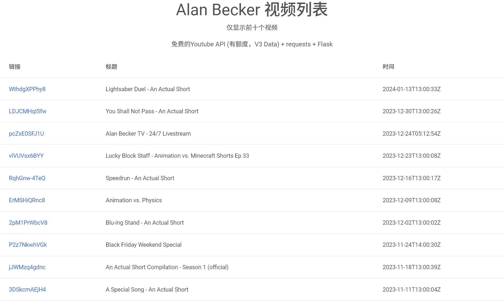

ABVL
起因
怎么说呢，我是Alan Becker的粉丝，一直想等更新
但是呢，他最近的更新不太寻常
以前很长一段时间，都会在油管的社区里面发预告的，但是最近他不发了，而且突然更新有点快，我又不能没到那个时候就翻__看一下
那么就有了这么一个想法，做一个能够检测更新的程序，放在外国的免费服务器上（孩子没钱），时不时访问一下就不用每次都翻了
开发
一开始我的想法是requests爬虫，结果怎么也爬不到，那就只能找api了
上网搜了一下，很快啊，Youtube API V3 Data！研究了一下调用，我要的数据都有了
我是用Postwoman测试api的，但是当我转移到python进行本地测试后，总是报错，因为那玩意要单独设置代理
本来还想搞直播检测的，结果要强制登陆账号，放弃了
那么前端呢？Flask！做了一个小小的网页模板，运用了mdbootstrap，稍微好看了点
最后就是服务器了，我放在了PythonAnywhere上，访问的时候一直不通过，结果是因为wsgi文件没有设置。上网抄了一段，还是不行，只在import语句报错，说是找不到文件。后来排查了很久，实在不行的时候我想把上面的路径删掉一个/，还真就行了，6
成果
可以直连查看：链接、标题、发布时间
